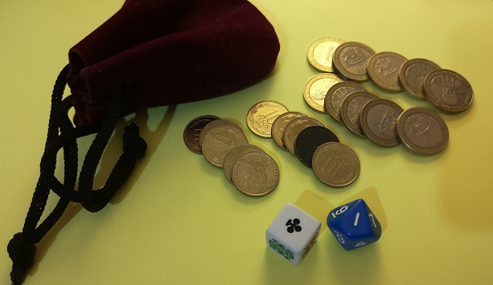
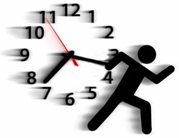

Jornada Coderetreat
El juego de las monedas
Preparativos
- Armar equipos de 6 personas aprox.
- Cada equipo selecciona un lider.
- A cada equipo se le entrega el KIT COINS
Cada equipo verifica el contenido de su KIT COINS...
Este kit contiene:
- 10 monedas grandes (100 pesos)
- 10 monedas pequeñas (10 pesos)
- 1 dado de 10 caras
- 1 dado de 6 caras (poker)
OJO: Es el lider del equipo quien siempre inicia el juego...
Este evento es contra reloj
Ciclos de 5 minutos...
1° ciclo
Regla del ciclo:- Para iniciar el LIDER debe obtener un AS en el dado de poker.
- Los jugadores solo usan su mano izquierda.
- Para que el siguiente jugador pueda tomar el lote, debe sacar un numero PAR en el dado de diez caras.
- Entre jugadores solo se mueven LOTES de monedas cinco monedas.
Mecanica del ciclo:
Para iniciar el LIDER debe obtener un AS en el dado de poker.
Luego, se arman lotes de monedas con todas ellas en el mismo sentido, se inicia por las pequeñas y luego por las grandes.
Cada jugador debe invertir cada moneda del lote y armar otro lote (de a cinco monedas) con ellas antes de que el siguiente jugador las pueda tomar.
Cada jugador un jugador pueda tomar un lote, antes debe tirar el dado de diez caras y obtener un numero PAR.
Conclusion:
Se determina cuantas monedas llegaron al lider y en que tiempo.
2° ciclo
Regla del ciclo:- Para iniciar el LIDER debe obtener un AS en el dado de poker.
- Los jugadores solo usan su mano izquierda.
- Entre jugadores solo se mueven LOTES de monedas diez monedas.
Mecanica del ciclo:
Para iniciar el LIDER debe obtener un AS en el dado de poker.
Luego, se arman lotes de monedas, se inicia por las pequeñas y luego por las grandes.
Cada jugador debe tomar cada moneda del lote y armar otro lote (de a diez monedas) con ellas antes de que el siguiente jugador las pueda tomar.
Cada jugador un jugador pueda tomar un lote, antes debe tirar el dado de 10 caras y obtener un numero PAR.
Conclusion:
Se determina cuantas monedas llegaron al lider y en que tiempo.
3° ciclo
Regla del ciclo:- Para iniciar el LIDER debe obtener un AS en el dado de poker.
Mecanica del ciclo:
Para iniciar el LIDER debe obtener un AS en el dado de poker.
El grupo decide que monedas y en grupos de a cuanto pueden mover.
Conclusion:
Se determina cuantas monedas llegaron al lider y en que tiempo.